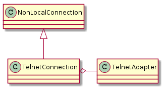

A module to hold an Telnet connection.
The TelnetConnection takes the command-line command as a property and the arguments to the command as parameters.
e.g.
sc = TelnetConnection()
output = sc.ls('-l')
print output.output
prints the output of the ls -l command line command

| TelnetConnection(hostname[, port, username, ...]) | A TelnetConnection executes commands over a Telnet Connection | ||
| TelnetConnection.client |
|
||
| TelnetConnection._procedure_call(command[, ...]) | Despite its name, this isn’t intended to be run. | ||
| TelnetConnection.validate(line) |